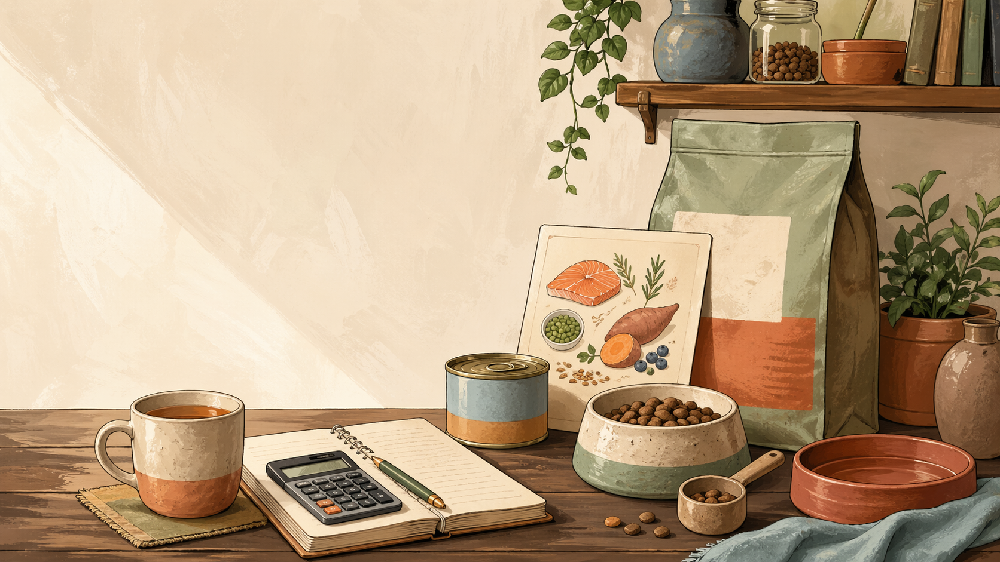
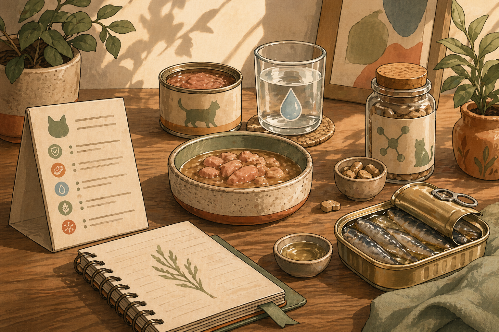
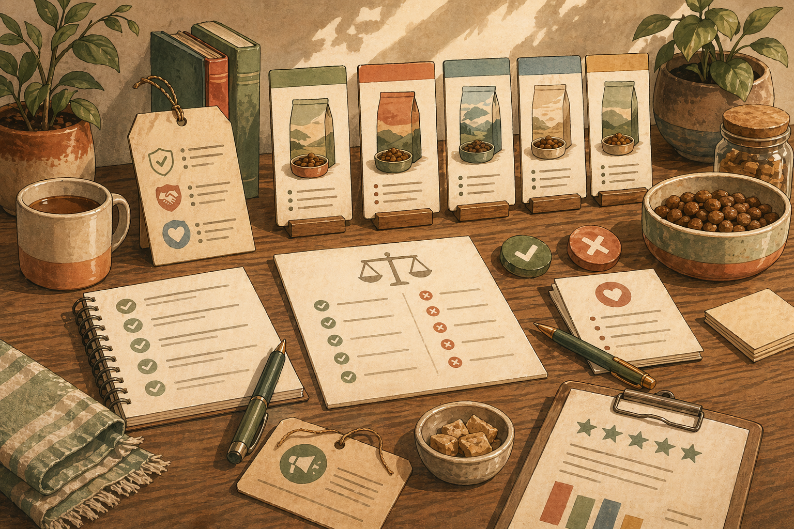
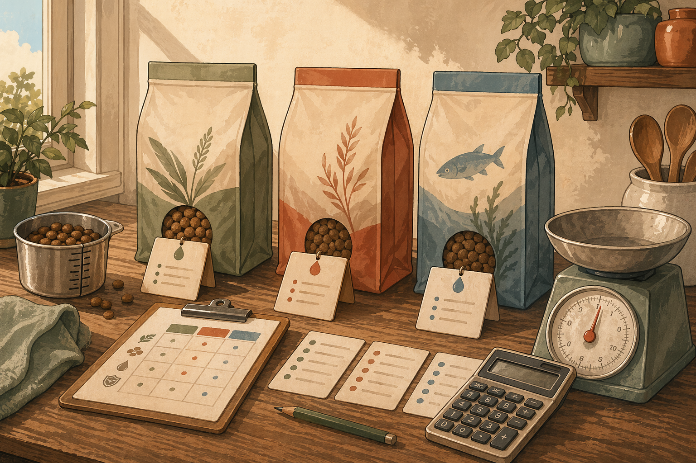
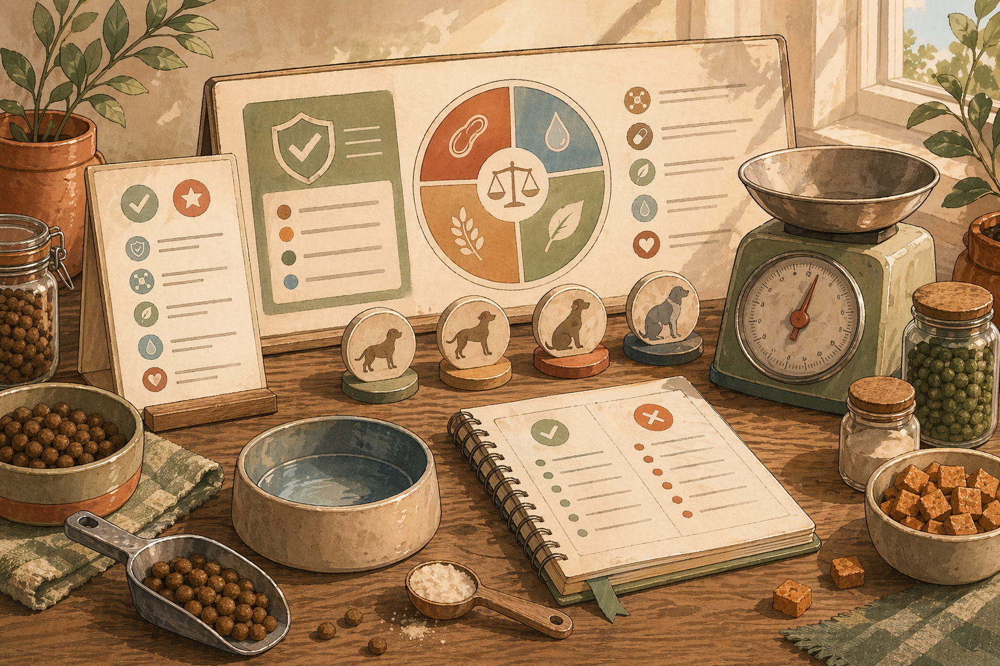

How much should I feed my dog per day?
Use life stage, calories per cup, feeding directions, and body condition together.
editorial system
Five launch articles grounded in AAFCO, FDA, WSAVA, Merck, Cornell, and Tufts guidance, written to stay useful without pretending to be veterinary care.

articles
Use life stage, calories per cup, feeding directions, and body condition together.

Calories, meal rhythm, wet-versus-dry volume, and appetite all matter.

Most treats are extras, not nutritionally complete diets, and their calories still count.

Price the usable calories, not just the bag.

The adequacy statement matters more than front-of-bag confidence.
editorial boundary
Keep the first article batch anchored to feeding amount, treat limits, calorie clarity, life stage, and label meaning. Disease, dosing, and treatment belong elsewhere.